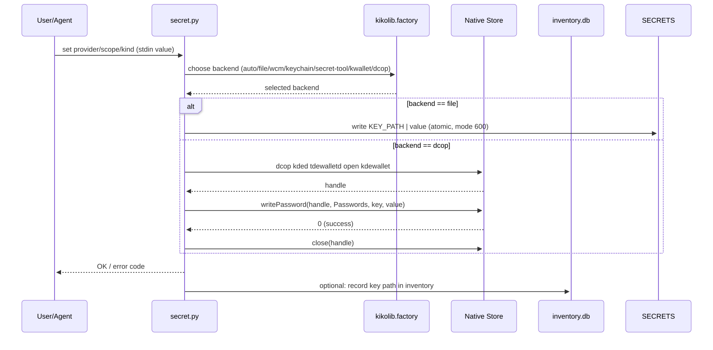

Status: v5 — tooling implemented and tested. Self-contained, portable folder for AI-assisted software development.
./ ├── AGENTS.md # project rules (single source of truth) ├── README.md # entry point, how to continue on another machine ├── doc/ │ ├── architekture.html # this file — architecture & UML diagrams │ └── diagrams/ │ ├── arch-overview.mmd # Mermaid source │ ├── arch-overview.svg # rendered SVG │ ├── secret-flow.mmd │ ├── secret-flow.svg │ ├── db-schema.mmd │ ├── db-schema.svg │ ├── autodiscovery.mmd │ └── autodiscovery.svg ├── lib/ │ ├── README.md # vendored kikolib provenance & license │ └── kikolib/ # vendored stdlib keystore + factory (MIT) │ ├── __init__.py │ ├── dotenv.py │ ├── factory.py │ ├── http_client.py │ ├── keystore.py │ ├── native_utils.py │ ├── posix_utils.py │ ├── retry.py │ ├── server.py │ ├── sse.py │ ├── tokens.py │ └── yaml_lite.py ├── data/ │ ├── schema.sql # committed SQLite schema │ ├── seed.sql # committed initial inventory data │ └── inventory.db # local only, gitignored ├── proc/ │ ├── autodiscovery.md # Rule 7 terminal procedure │ └── htmlcreate.md # Mermaid HTML documentation procedure ├── tools/ │ ├── __init__.py │ ├── secret.py # portable secret tool over native stores │ ├── inventory.py # SQLite inventory manager │ ├── autodiscovery.py # machine discovery (OS, RAM, git, bash, db) │ ├── ping.py # model ping via OpenCode │ ├── ping_direct.py # direct HTTP ping to providers (KWallet keys) │ ├── setup_providers.py # configure OpenCode providers from KWallet │ └── tests/ # functional tests (57 tests, all pass) │ ├── __init__.py │ ├── secret.py │ ├── inventory.py │ ├── autodiscovery.py │ ├── test_secret.py │ ├── test_inventory.py │ └── test_autodiscovery.py ├── in/ # empty (task.md removed from tracking) ├── out/ # audit reports from external models (gitignored) ├── .tmp/ # temporary files, not versioned └── .gitignore




OpenCode е терминална TUI (Terminal User Interface) приложение — целият интерфейс се вижда в един терминал прозорец, без разделни GUI прозорци. Ето концептуален изглед:
petark@petar-hpprobook: ~/Documents/Default Project$ opencode ───────────────────────────────────────────────────────────────────── OpenCode v2 — Portable Workspace (Q4OS/TDE) ───────────────────────────────────────────────────────────────────── > zdr. suzdadem agents.md █ Разбирайки задачата, създавам AGENTS.md с правила за проекта... █ Правила: език, записи, самодостатъчност, технически изисквания, █ работни навици, без инициатива без разрешение. █ █ Git операции: lokalen commit/push без дискусия. █ git push remote изисква изрично „да“. █ █ Създавам AGENTS.md... █ [done] AGENTS.md written (126 lines) ───────────────────────────────────────────────────────────────────── > python3 tools/autodiscovery.py █ === Portable workspace auto-discovery === █ OS: Linux 6.12 Q4OS (TDE) █ Processor: x86_64 | RAM: 7767 MB █ Python: 3.13.5 | git: yes | bash: yes █ Minimum met: git bash + Python stdlib are present. █ tools/secret.py: present █ tools/inventory.py: present █ data/inventory.db: exists █ █ Notes: GitHub token and email are OPTIONAL. █ auto never falls back to plaintext. ───────────────────────────────────────────────────────────────────── > python3 -m unittest discover -s tools/tests -t . -v █ Ran 57 tests in 6.7s █ OK (skipped=1) █ [31m✓[0m All functional tests pass ───────────────────────────────────────────────────────────────────── █ Waiting for your command...
list и probe показват само key path-ове. KWallet/DCOP портфейлът на Q4OS трябва да е отворен веднъж ръчно преди secret.py да го може да използва.tools/setup_providers.py to add them with keys from KWallet.SECRET_LIVE_TESTS=1 python3 -m unittest discover -s tools/tests -t . -v after opening the KWallet.in/task.md (local, not tracked) to external models (beam-free, flint-40b-free) and collect reports in out/.origin configured yet. Add remote and push when ready.